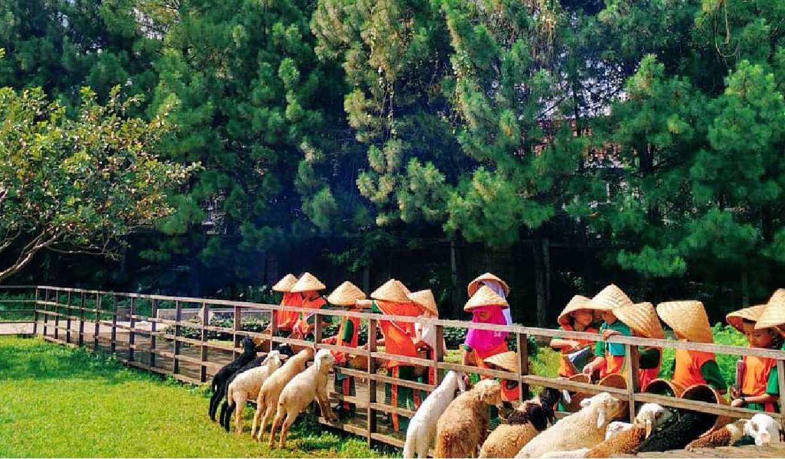

Kuntum Farmfield ini tak hanya menyuguhkan wisata perkebunan saja lho! Kuntum Farm Field juga memberikan wahana edukasi yang berkaitan dengan perkebunan dan juga peternakan.
Beragam fasilitas bisa kamu dapatkan saat berkunjung ke sini. Salah satunya, kamu bisa berinteraksi langsung dengan hewan peternakan dan melihat perkebunan. Selain itu, kamu juga memberi makan ternak, menangkap ikan dan ikut bercocok tanam.

Selain fasilitas tersebut, Kuntum Farm field juga menyediakan persewaan kuda. Hal ini bertujuan untuk melatih kemampuan anak dalam berkuda. Di wahana ini, anak-anak diajak berkeliling kawasan Kuntum Farmfield untuk menikmati pemandangan alam yang sejuk dan asri.